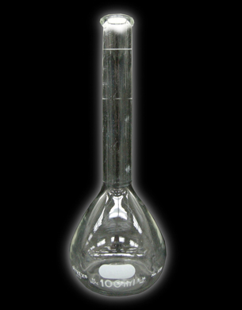

Module 4—Properties of Solutions
 Read
Read
Preparing Solutions

© Linda Muir/shutterstock
Many solutions found in a lab are not actually bought as solutions but as solutes—the solutions are made in the lab by dissolving the solute in water. This procedure greatly reduces the transportation costs of bringing chemical solutions to the end user. A bottle of antacid tablets is economical since you can make 100 antacid solutions from an initial purchase of five dollars. If these 100 solutions all had to be bought separately as solutions, they would cost hundreds of dollars!
Preparing solutions requires the use of specialized glassware. Using appropriate glassware allows for the preparation of solutions with precise concentrations. Here are some of the specialized glassware you will use in preparing solutions.
Volumetric Flask

Volumetric containers are used to measure a specific volume with a very high degree of precision. For example, a 100-mL volumetric flask has a white line that indicates 100 mL. The line is specific for each flask, and its location was determined at standard temperature. This calibration process makes volumetric flasks some of the most precise equipment in a chemistry lab.
Volumetric Pipette

A volumetric pipette is also a calibrated piece of glassware, but it is used for lower volumes. Look at the pipettes in Figures 12 and 13 on the bottom of page 800 of your textbook. A 10-mL volumetric pipette has only one line indicating precisely 10 mL. Graduated pipettes may have markings for each 0.1 mL. See the graduated pipette at the bottom of the page in Figure 13.
 Watch and Listen
Watch and Listen
Preparing a Solution from a Solid
If you have access to the internet, view the video “Preparation of a Solution by Direct Addition.”
This next video of the same process requires a username and password. Your Username is nelsonchem_student and your password is nelsonchem_onlinelearning.
“Preparing a Standard Solution.”
In these videos, you have the opportunity to watch the process to prepare a solution of specific, accurate concentration (a standard solution) and to answer the self check question. Pause the video so you can complete the question and check your answers.
If you cannot view the video, a listing of these steps also appears in "Preparing a Standard Solution from a Solid Reagent" on page 803 of your textbook.
Self Check Question : A standard solution of 0.350-mol/L iron(II) sulfate—water (1/7) is to be prepared. The required volume is 100.00 mL, and the solute has the chemical formula FeSO4•7H2O(s). Describe how to prepare this solution.